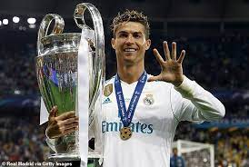
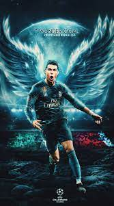
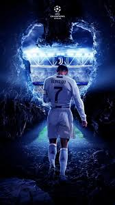
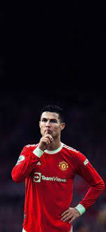
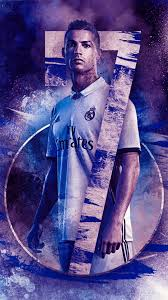
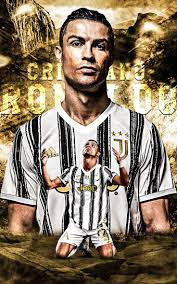

Pele was one of the greatest people to ever have kicked a ball. The king was born in the South American nation of Brazil on 23 October 1940 where he first started his football journey at Santos aged 15. Immediately he became a star and played in his first Fifa World Cup aged 17. That was a tournament he would never forget. He won Brazil their World Cup that year scoring a double against Sweden. After that dazzling performance, the Brazilians called him O Rei (The King(. He won two more World Cup in 1962 and 1970, scored 778 goals and 352 assists before retiring aged 36. He was still being recognised by people and in 2013 he won a special prize in the Ballon D'or right next to a player I'll mention later. The whole world had stopped at the announcement of the death of O Rei on the 29th of December 2022.


Diego Armando Maradona was born in Lanús, Argentina on 30 October 1960. His first club was called Argentinos Juniors where he debuted 10 days before his 16th birthday. Four months later, he debuted for Argentina crowning him the youngest Argentina debutant. With Argentina, he won 2 World Cups. Maradona bagged 343 goals and 226 assists. He sadly also died on 25.11.20.


Lionel Andres Messi is arguably the Greatest of All Time. He was born in Rosario, Argentina on 24 June 1987 where he started as a little boy playing with Newell's Old Boys. His biggest setback took place when a doctor diagnosed Messi with a growth hormone deficiency but Barcelona found the uprising star's talent key. They offered to pay for his treat and sign. Obviously, Messi accepted and the rest is history. 800 goals and 353 assists, 7 Ballon D'ors, 7 Fifa Best Awards, 3 UEFA Best Awards, 10 Laliga titles, 7 Copa Del Reys, 8 Supercopa de Espanas, 4 UEFA Champions Leagues, 3 UEFA Super Cups, Ligue 1, Finallisima, Copa America and the 2022 Fifa World Cup.
.jpg)
 2.jpg)
 3.jpg)
 4.jpg)
 5.jpg)
 6.jpg)
Cristiano Ronaldo dos Santos Aveiro is one of or the GOAT of Football. The icon was born in Funchal, Madeira, Portugal on 5 February 1985. He had a difficult start to life starting at Andorinha then moving to Lisbon by himself to pay for Sporting Lisbon. There people made fun of his accent and he was expelled from school aged 14 because he threw a chair at his teacher who made fun of Cristiano and his family. At that time in his life, he decided all he'd focus on was football. It paid off, scoring 830 goals (the most in history) and 273 assists (3rd most of all time). He has won 5 Ballon D'ors, 5 Champions Leagues, 4 European Golden Boots (the most done by a European player), 4 Fifa Club World Cup, 3 Premier Leagues, 2 Laligas, Emirates Fa Cup, 2 Scudettos, Italian Cup, 2 Italian Super Cups, 2 Fifa Best Awards, The Portuguese Super Cup, Nations League, Euro 2016 and more.
     